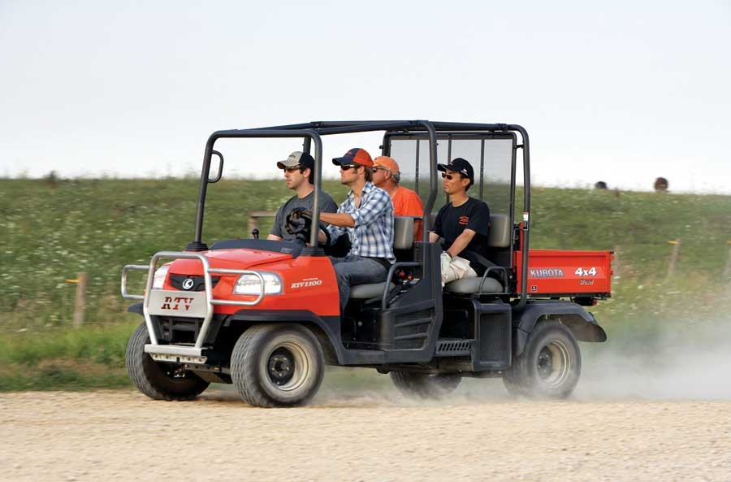

More Than Meets The Eye: New Utility Vehicle Is Transformable
Add more passenger space - or cargo space - to this new Kubota RTV.
By Oscar H. Will III
October/November 2009
Just as virtually every machinery company has jumped on the utility vehicle bandwagon, Kubota charges out ahead with an innovative new concept that carries more people or more cargo, depending on your needs. The all-new RTV1140CPX features a transformation system that quickly converts from one- to two-row seating, which allows the operator to choose between passenger capacity or best-in-class cargo volume. And there’s no compromise in safety, thanks to the RTV’s OSHA-compliant roll-over protective structure.
“The RTV provides exceptional comfort and safety while accommodating four adults, as well as unmatched cargo configurations, capacity and convenience,” says Dan Muramoto, product manager for Kubota. Muramoto says this RTV will have broad appeal, meeting the needs of ranchers and farmers, property owners, facility managers - anyone who works in the great outdoors.
The list of Kubota accessories for their utility vehicle lineup is long. Operators can add a canopy, bed liner, mud guards, heavy-duty springs and struts, auxiliary lighting kits, and any of a number of other amenities that will increase the vehicle’s comfort and utility.
The RTV1140CPX 4-wheel drive utility vehicle is powered by a fuel-miserly 24.8-horsepower, three-cylinder Kubota diesel engine and features wet disc brakes and hydrostatic power steering. The transformable vehicle also features Kubota’s new triple-range, variable hydro transmission that delivers power and torque for any situation, easy speed and direction changes, and smooth dynamic braking. The maximum cargo load is 1,102 pounds, with a towing capacity of 1,300 pounds. A front guard and hydraulic bed lift come standard.
The RTV1140CPX is currently listed for less than $16,000. Look for these versatile vehicles at a Kubota dealer near you - you can find one using Kubota’s Dealer Locator.
|
 KUBOTA Kubota’s new RTV allows you to flip between space for extra passengers, or extra cargo. |
 KUBOTA This RTV converts from 4-seater to best-in-class cargo volume. |
|